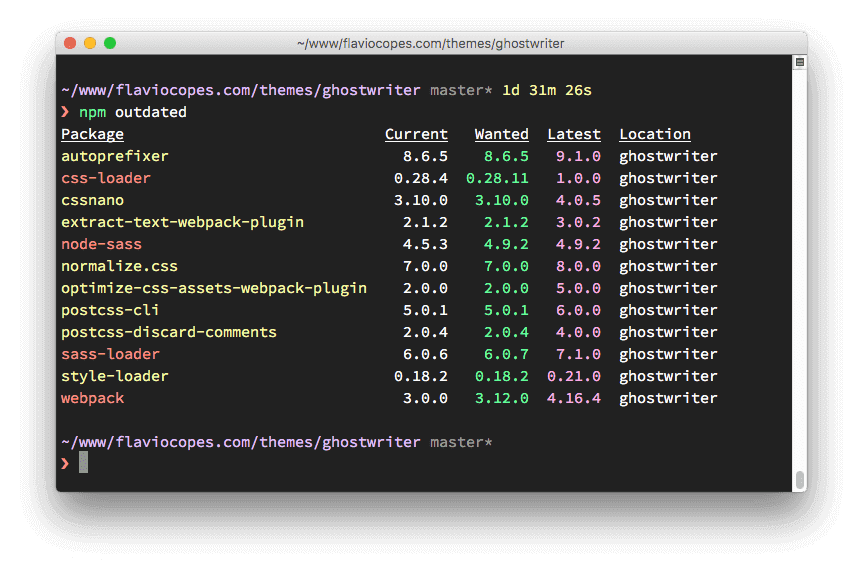
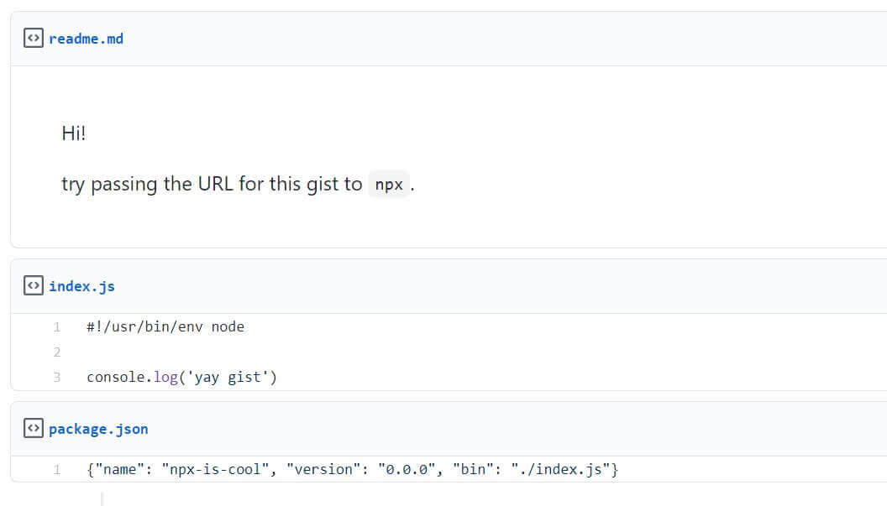

这篇文章上次修改于 346 天前，可能其部分内容已经发生变化，如有疑问可询问作者。
调用 node.js 文件
node.js 有内建的 module system 模块系统，一个node.js 文件可以导入其他 node.js 文件内定义的功能。
语法如下：
const library = require('./libs')和导入其他第三方模块类似使用 require 指令，需要指定 node.js 文件路径。以上示例表示导入当前目录下的 libs.js 文件。
js 文件中默认定义的 objects 等元素是私有的，不能够被外部使用。在被导入的文件中，需要在引用前 expose 暴漏出需要被外部使用的功能。需要使用到 module system 的 module.exports API 来实现。
当给一个 object 或 function 赋予 exports 属性时，就表明这些元素可以暴漏给外部。有两种方法来实现。
第一种方法是将某个 object 直接赋值给 module.exports，module.exports 是 module system 的一个 object 用来将某个 object 暴漏出来，且只能在一个文件中赋值给某一个元素，下面是一个示例：
libs.js 文件：
const person = {
name: 'marco',
age: 20
}
module.exports = person;main.js 文件：
const libs = require('./libs');
console.log(libs.age);
//OUTPUT:
//20上面示例中，我们将 libs.js 文件的 person object 赋值给了 module.exports，在 main.js 中调用 libs.js 文件后，main.js 中的 libs object 就相当于 person object。
我们可以发现，这种定义方法可以将某个 node.js 文件中的一个 object 暴漏给外部使用。
第二种方法是将需要暴漏的元素定义为 exports 的 properties，这种方式可以将多个 objects 或 function 暴漏给外部。
libs.js 文件：
const person = {
name: 'marco',
age: 20
}
exports.person = person;
exports.car = {
brand: 'bmw',
color: 'red'
}main.js 文件：
const libs = require('./libs');
console.log(libs.person.age);
console.log(libs.car.brand);
//OUTPUT:
//20
//bmw以上示例中，我们先在 libs.js 中定义了两个 object，并都作为 exports 的一个 property，可以看到有两种方式定义。在 main.js 中调用后，通过调用 libs object 对应的 properties 名称即可调用对应暴露的元素。
npm 包管理器
npm 是 node.js 的标准包管理器。
一开始，npm 作为下载和管理 node.js 包的依赖的工具，现在也成为了 JavaScript 前端开发工具。
下载包
如果项目中有 package.json 文件，可以通过下面指令自动安装所有在文件中定义的模块，安装路径为 node_modules 文件夹内：
npm install
安装某一个模块包：
npm install <package-name>
要安装某个包的特定版本需要加上 @ 标记：
npm install [email protected]
在项目中安装的包会自动添加条目到 package.json 文件中。也可以在安装时使用 --save 选项来添加到文件。
更新包
更新项目中所有包：
npm update
更新某一个包：
npm update <package-name>
更新 npm 本身到最新版：
npm install -g [email protected]
执行任务
package.json 文件内支持定义指定的命令行指令，通过下面的语法来执行：
npm run <task-name>
指令定义在 scripts 块内，例如：
{
"scripts": {
"start": "uname -r"
}
}此时我们在终端执行下面命令：
$ npm run start
Debugger attached.
> start
> uname -r
5.8.0-38-generic
Waiting for the debugger to disconnect...可以看到通过 run 定义命令的名称就可以执行对应的命令。
国内源
由于默认 npm 的包安装地址使用的是国外服务器所以国内下载速度很慢，推荐替换为国内镜像地址，使用下面命令替换为国内腾讯云镜像：
npm config set registry http://mirrors.cloud.tencent.com/npm/
验证当前使用的地址：
npm config get registry
如果返回https://registry.npm.taobao.org，说明镜像配置成功。
包安装路径
当使用 npm 安装包时，可以定义两种安装模式：
- local install 逻辑安装
- global install 全局安装
默认情况下当我们使用下面指令安装包：
npm install chalk
包会安装到当前项目路径下的 node_modules 文件夹内。此时 npm 会将对应包的信息写入 package.json 文件内的 dependencies 块内，如：
{
"dependencies": {
"chalk": "^4.1.0",
"inquirer": "^7.3.3",
"minimist": "^1.2.5",
"progress": "^2.0.3"
}
}全局安装通过 -g 标记实现：
npm install -g chalk
使用全局安装模式时，npm 不会将包安装到项目路径下，而是 global location 路径下。通过 npm root -g 命令可以返回 golbal 路径的地址，Linux 默认地址为：/usr/local/lib/node_modules，Windows 默认地址为：C:\Users\YOU\AppData\Roaming\npm\node_modules。
可执行程序
当安装一个包后，我们通过 require 关键词来调用模块：
const inquirer = require('inquirer')
当安装的包是可执行程序的时候呢？当安装的包含有可执行程序时，程序会放在 node_modules/.bin/ 文件夹内，关于如何运行这些可执行程序，我们通过 cowsay 包来演示。
首先安装 cowsay，这里安装到 global 路径下：
npm install -g cowsay
我的 global 路径地址为：/opt/node-v15.5.1-linux-x64/lib/node_modules，可执行文件被安装在 /opt/node-v15.5.1-linux-x64/bin/ 目录下：
cowsay -> ../lib/node_modules/cowsay/cli.js查看属性可以看到此可执行文件是指向 cli.js 的一个链接。
通过 npx 命令可以方便的执行此程序，不需要提供程序所在路径：
$ npx cowsay wow
_____
< wow >
-----
\ ^__^
\ (oo)\_______
(__)\ )\/\
||----w |
|| ||package.json 文件
package.json 文件是其项目的一个声明，它可以用来做一些完全没有关联的事情。例如，它是配置工具的仓库，也存储着 npm 安装的包的版本信息。
下面是最简单的文件形式：
{}
文件需要遵守 json 格式，否则无法被程序读取其定义的内容。没有什么内容是必须的，所以可以是一个简单的大括号。如果你要做一个通过 npm 分享的 node.js 包，那么 package.json 文件需要定义一些必须的属性以供了解这个包的信息，后面会做详细介绍。
下面是另一个示例：
{
"name": "test-node"
}以上定义了一个 name property，定义了这个 app 或 package 的名称。文件和项目文件在同一文件夹下。
下面是一个更加复杂的示例：
{
"name": "test-project",
"version": "1.0.0",
"description": "A Vue.js project",
"main": "src/main.js",
"private": true,
"scripts": {
"dev": "webpack-dev-server --inline --progress --config build/webpack.dev.conf.js",
"start": "npm run dev",
"unit": "jest --config test/unit/jest.conf.js --coverage",
"test": "npm run unit",
"lint": "eslint --ext .js,.vue src test/unit",
"build": "node build/build.js"
},
"dependencies": {
"vue": "^2.5.2"
},
"devDependencies": {
"autoprefixer": "^7.1.2",
"babel-core": "^6.22.1",
"babel-eslint": "^8.2.1",
"babel-helper-vue-jsx-merge-props": "^2.0.3",
"babel-jest": "^21.0.2",
"babel-loader": "^7.1.1",
"babel-plugin-dynamic-import-node": "^1.2.0",
"babel-plugin-syntax-jsx": "^6.18.0",
"babel-plugin-transform-es2015-modules-commonjs": "^6.26.0",
"babel-plugin-transform-runtime": "^6.22.0",
"babel-plugin-transform-vue-jsx": "^3.5.0",
"babel-preset-env": "^1.3.2",
"babel-preset-stage-2": "^6.22.0",
"chalk": "^2.0.1",
"copy-webpack-plugin": "^4.0.1",
"css-loader": "^0.28.0",
"eslint": "^4.15.0",
"eslint-config-airbnb-base": "^11.3.0",
"eslint-friendly-formatter": "^3.0.0",
"eslint-import-resolver-webpack": "^0.8.3",
"eslint-loader": "^1.7.1",
"eslint-plugin-import": "^2.7.0",
"eslint-plugin-vue": "^4.0.0",
"extract-text-webpack-plugin": "^3.0.0",
"file-loader": "^1.1.4",
"friendly-errors-webpack-plugin": "^1.6.1",
"html-webpack-plugin": "^2.30.1",
"jest": "^22.0.4",
"jest-serializer-vue": "^0.3.0",
"node-notifier": "^5.1.2",
"optimize-css-assets-webpack-plugin": "^3.2.0",
"ora": "^1.2.0",
"portfinder": "^1.0.13",
"postcss-import": "^11.0.0",
"postcss-loader": "^2.0.8",
"postcss-url": "^7.2.1",
"rimraf": "^2.6.0",
"semver": "^5.3.0",
"shelljs": "^0.7.6",
"uglifyjs-webpack-plugin": "^1.1.1",
"url-loader": "^0.5.8",
"vue-jest": "^1.0.2",
"vue-loader": "^13.3.0",
"vue-style-loader": "^3.0.1",
"vue-template-compiler": "^2.5.2",
"webpack": "^3.6.0",
"webpack-bundle-analyzer": "^2.9.0",
"webpack-dev-server": "^2.9.1",
"webpack-merge": "^4.1.0"
},
"engines": {
"node": ">= 6.0.0",
"npm": ">= 3.0.0"
},
"browserslist": ["> 1%", "last 2 versions", "not ie <= 8"]
}包含了很多的属性设置：
- version 表示当前版本号
- name 设置包名称
- description 对 app 简要的描述
- main 设置 app 的入口文件
- private 如果设置为 true 可以防止包被无意的发布到 npm
- scripts 定义可以运行的脚本命令
- dependencies npm 依赖包列表
- devDependencies 定义开发使用的 npm 包列表
- engines 设置 app 运行的 node 版本
- browserslist 指定支持的浏览器版本
以上所有的属性都可以被 npm 或其他工具使用。
常用属性
下面介绍一些常规使用的属性，包括你在本地开发的项目也可以使用。
name 定义app 名称：
"name": "test-project"
name 必须小于 214 个字符，不能含有空格，只能包含小写字母，横杠- 或下划线_。如果将包发布到 npm，会生成一个独有的链接。
author 定义作者信息：
"author": "marco <[email protected]> (https://niekun.net)"
或者：
"author": {
"name": "marco",
"email": "[email protected]",
"url": "https://niekun.net"
}contributors 定义代码贡献者信息，可以包含多人：
"contributors": [
{
"name": "marco",
"email": "[email protected]",
"url": "https://niekun.net"
}
]bugs 定义反馈 bug 的链接，一般是 GitHub issue 页面：
"bugs": "https://github.com/whatever/package/issues"
homepage 定义包的主页链接：
"homepage": "https://whatever.com/package"
version 定义当前包的版本：
"version": "1.0.0"
此属性遵守 semantic versioning (semver) notation 语义版本标记语法。也就是由三个数字表示：x.x.x
license 定义包的授权信息：
"license": "MIT"
keywords 定义关于这个包实现功能的关键词，是一个数组：
"keywords": [
"learning",
"nodejs"
]使用 keywords 可以帮助别人找到你的包，或者在 https://www.npmjs.com/ 网站上搜索关键词。
description 定义一个对此 app 的简短描述：
"description": "a node.js beginner guide"
repository 定义项目仓库地址：
"repository": "github:whatever/node-project"
注意如果不是使用的 GitHub 也可以定义其他工具：
"repository": "gitlab:whatever/node-project"
也可以明确的定义版本控制系统信息：
"repository": {
"type": "git",
"url": "https://github.com/whatever/testing.git"
}main 设置包的入口：
"main": "./main.js"
private 如果设置为 true，可以防止包被无意的发布到 npm：
"private": "true"
scripts 定义可执行的 node 脚本：
"scripts": {
"start": "uname -r",
"test": "echo abcd"
}定义的脚本是命令行程序，通过 npm run xxx 执行，如：
npm run start
dependencies 定义 app 需要安装的 npm 依赖包：
"dependencies": {
"chalk": "^4.1.0",
"inquirer": "^7.3.3",
"minimist": "^1.2.5",
"progress": "^2.0.3"
}当通过 npm install <PACKAGENAME> 安装包，会自动将包写入 package.json 文件的 dependencies 块。
devDependencies 定义 app 开发需要的 npm 依赖包：
"devDependencies": {
"autoprefixer": "^7.1.2",
"babel-core": "^6.22.1"
}和 dependencies 的区别是这里定义的包只是在开发设备上安装，而不需要在执行设备上安装。开发包通过以下命令安装：
npm install --save-dev <PACKAGENAME>
engines 设置此包运行的 node 版本和其他命令版本：
"engines": {
"node": ">= 6.0.0",
"npm": ">=3.0.0"
}browserslist 定义 app 支持的浏览器版本：
"browserslist": [
"> 1%",
"last 2 versions",
"not ie <= 8"
]以上定义的意义是：支持所有类型浏览器的最近两个版本且需要至少有 1% 的占有率，不包括小于等于 IE8 版本的浏览器。浏览器占有率信息来自于 https://caniuse.com/ 统计。
依赖包版本信息
在 dependencies 和 devDependencies 中定义了依赖包列表，每个包都定义了版本信息，如：^0.13.0 或 ~3.0.0，通过版本号前的符号可以们定义接受那些版本的升级，下面介绍版本标记的用法：
- 无标记，如 1.0.0 定义只安装此版本的包
- latest 定义安装最新版本的包
- ^ 只能升级到不改变最左边第一个非零数字的版本，如定义 ^0.13.0，通过 npm update 可以升级到 0.13.1 或 0.13.2，但不能升级到 0.14.0，定义 ^1.13.0，能够升级到 1.13.1 或 1.14.0，不能升级到 2.0.0
- ~ 只能升级最后一位数字变化的版本，如 定义 ~1.13.0，能够升级到 1.13.1，但不能升级到 1.14.0
- > 接受大于定义的版本号的更新
- >= 接受大于等于定义的版本号的更新
- < 接受小于定义的版本号的更新
- <= 接受小于等于定义的版本号的更新
- - 设置一个版本范围，如：1.0.0 - 2.0.0
- || 组合设置，如：< 2.0.0 || > 3.0.0
更加详细的定义方法参考：https://nodejs.dev/learn/semantic-versioning-using-npm
package-lock.json 文件
在 npm 5 版本中 npm 引入了 package-lock.json 文件。
前面介绍了 package.json 文件，它是一个通用的被广泛使用的配置文件。package-lock.json 文件的目的是更加确切的追踪安装的依赖包的版本，以用来 100% 复制开发者的安装环境到其他安装者设备上，即使某些包已经够了更新版本。
这解决了一个 package.json 遗留的问题，在 package.json 中你可以定义某个包可接受的版本升级范围，版本格式遵守 semantic versioning (semver) notation 语义版本标记语法，例如：
- ~1.13.1 可以升级到 1.13.2，但不可以升级到 1.14.0
- ^1.13.1 可以升级到 1.14.0，但不能升级到 2.0.0
- 1.13.1 只能安装 1.13.1 版本，不能升级到其他任何版本
你发布的包中并不包含开发环境中的 node_modules 文件夹因为它占用空间很大。当在其他设备中通过 npm install 命令安装依赖包时，竟会遵循上面定义的版本范围安装支持的最新版本到设备中，这就会导致用户安装的版本和你开发环境的版本不一致，可能导致 bug 的出现。
package-lock.json 中定义了你当前开发环境安装的各种依赖包的准确版本，这样通过 npm install 命令安装的就是其中定义的准确版本。
这一概念并不是 npm 独创的，其他编程语言也在使用类似的模式，如 php 的 Composer。
package-lock.json 文件需要打包在仓库中，以供其他人使用。当使用 npm update 更新包时，package-lock.json 中的定义也会同步更新。
下面是一个 package-lock.json 文件的示例，当我们执行 npm install cowsay 时，会创建以下内容：
{
"requires": true,
"lockfileVersion": 1,
"dependencies": {
"ansi-regex": {
"version": "3.0.0",
"resolved": "https://registry.npmjs.org/ansi-regex/-/ansi-regex-3.
0.0.tgz",
"integrity": "sha1-7QMXwyIGT3lGbAKWa922Bas32Zg="
},
"cowsay": {
"version": "1.3.1",
"resolved": "https://registry.npmjs.org/cowsay/-/cowsay-1.3.1.tgz"
,
"integrity": "sha512-3PVFe6FePVtPj1HTeLin9v8WyLl+VmM1l1H/5P+BTTDkM
Ajufp+0F9eLjzRnOHzVAYeIYFF5po5NjRrgefnRMQ==",
"requires": {
"get-stdin": "^5.0.1",
"optimist": "~0.6.1",
"string-width": "~2.1.1",
"strip-eof": "^1.0.0"
}
},
"get-stdin": {
"version": "5.0.1",
"resolved": "https://registry.npmjs.org/get-stdin/-/get-stdin-5.0.
1.tgz",
"integrity": "sha1-Ei4WFZHiH/TFJTAwVpPyDmOTo5g="
},
"is-fullwidth-code-point": {
"version": "2.0.0",
"resolved": "https://registry.npmjs.org/is-fullwidth-code-point/-/
is-fullwidth-code-point-2.0.0.tgz",
"integrity": "sha1-o7MKXE8ZkYMWeqq5O+764937ZU8="
},
"minimist": {
"version": "0.0.10",
"resolved": "https://registry.npmjs.org/minimist/-/minimist-0.0.10
.tgz",
"integrity": "sha1-3j+YVD2/lggr5IrRoMfNqDYwHc8="
},
"optimist": {
"version": "0.6.1",
"resolved": "https://registry.npmjs.org/optimist/-/optimist-0.6.1.tgz",
"integrity": "sha1-2j6nRob6IaGaERwybpDrFaAZZoY=",
"requires": {
"minimist": "~0.0.1",
"wordwrap": "~0.0.2"
}
},
"string-width": {
"version": "2.1.1",
"resolved": "https://registry.npmjs.org/string-width/-/string-width-2.1.1.tgz",
"integrity": "sha512-nOqH59deCq9SRHlxq1Aw85Jnt4w6KvLKqWVik6oA9ZklXLNIOlqg4F2yrT1MVaTjAqvVwdfeZ7w7aCvJD7ugkw==",
"requires": {
"is-fullwidth-code-point": "^2.0.0",
"strip-ansi": "^4.0.0"
}
},
"strip-ansi": {
"version": "4.0.0",
"resolved": "https://registry.npmjs.org/strip-ansi/-/strip-ansi-4.0.0.tgz",
"integrity": "sha1-qEeQIusaw2iocTibY1JixQXuNo8=",
"requires": {
"ansi-regex": "^3.0.0"
}
},
"strip-eof": {
"version": "1.0.0",
"resolved": "https://registry.npmjs.org/strip-eof/-/strip-eof-1.0.0.tgz",
"integrity": "sha1-u0P/VZim6wXYm1n80SnJgzE2Br8="
},
"wordwrap": {
"version": "0.0.3",
"resolved": "https://registry.npmjs.org/wordwrap/-/wordwrap-0.0.3.tgz",
"integrity": "sha1-o9XabNXAvAAI03I0u68b7WMFkQc="
}
}
}我们安装的 cowsay 有如下依赖，它们会被自动安装：
- get-stdin
- optimist
- string-width
- strip-eof
以上的依赖包可能也会有它们各自的其他依赖包，会自动安装相关其他包，每个包的依赖包在 requires 属性中定义。
所有的包以字母排序顺序在文件中。每个包都有 version 属性定义了各自当前安装的版本，resolved 定义了包地址，integrity 字符串用来验证包。
包版本管理及安装
下面的指令查询当前安装的所有包及其依赖包：
npm list
输出信息示例：
❯ npm list
/Users/joe/dev/node/cowsay
└─┬ [email protected]
├── [email protected]
├─┬ [email protected]
│ ├── [email protected]
│ └── [email protected]
├─┬ [email protected]
│ ├── [email protected]
│ └─┬ [email protected]
│ └── [email protected]
└── [email protected]当然也可以直接打开 package-lock.json 文件查看，但这样不太方便观察结构。
npm list -g 用来查看 global 安装的包。
如果只想查询顶层的包，也就是你主动通过 npm install 安装的那些包，可通过 npm list --depth=0 查询：
❯ npm list --depth=0
/Users/joe/dev/node/cowsay
└── [email protected]也可以单独查询某个包：
❯ npm list cowsay
/Users/joe/dev/node/cowsay
└── [email protected]使用下面命令查询某个包当前发布的最新版本：
❯ npm view cowsay version
1.4.0要安装某个包的特定版本需要加上 @ 标记：
npm install [email protected]
查看某个包的所有历史版本列表：
$ npm view cowsay versions
[
'1.0.0', '1.0.1', '1.0.2',
'1.0.3', '1.1.0', '1.1.1',
'1.1.2', '1.1.3', '1.1.4',
'1.1.5', '1.1.6', '1.1.7',
'1.1.8', '1.1.9', '1.2.0',
'1.2.1', '1.3.0', '1.3.1',
'1.4.0'
]通过 npm update 可以更新所有已安装的包，更新版本规则遵循 package.json 定义的版本升级范围，同时会更新 package-lock.json 文件内的当前包版本信息。
想要查询当前有哪些包有更新版本时，可以执行 npm outdated 命令：

其中有些更新是大版本更新， npm update 并不会更新到这些大版本，因为这些更新可能包含有重大的变化。如果要强制更新到最新的版本包括大版本更新，可以按顺序执行下面的命令：
npm install -g npm-check-updates
ncu -u
npm update使用下面命令卸载某个包：
npm uninstall <package-name>
添加 -S 或 --save 标记删除 package.json 中的相关信息。如果要删除的包是一个开发包，在 devDependencies 中定义过，则需要添加 -D 或 --save-dev 标记来删除相关信息：
npm uninstall -S <package-name>
npm uninstall -D <package-name>如果包是 global 安装的，则卸载需要添加 -g 标记：
npm uninstall -g <package-name>
npm local 和 global 安装
本地包和全局包的区别是本地包通过 npm install 安装到当前项目下的 node_modules 文件夹内，全局包通过 npm install -g 安装到系统路径下，路径地址可通过 npm root -g 查询。
在程序中，只能 require 本地包：
require('package-name')
通常情况下推荐所有的包都以本地模式安装。这可以让不同的程序使用各自不同版本的包。更新一个全局包会同时影响所有使用这个包的 app。
当一个包含有可执行程序时，应该安装为 global 全局包。这样所有的项目都可以调用执行。
npm dependencies 和 devDependencies
当通过 npm intall 安装包时，表示将包作为 dependency。包信息会自动写入 package.json 文件的 dependencies 块内。当安装时添加 -D 标记，表示将包作为 devdependency 安装。包信息会自动写入 devDependencies 块内。
开发包的目的是用来开发程序时使用，作为产品运行时是不需要的。
执行 npm install 会默认安装这些开发包。如果不需要安装开发包需要加上 --production 标记：
npm install --production xxx
npx 包运行器
npx 可以用来运行 node.js 程序。node.js 开发者通常将大部分含有可执行程序的包作为 global 包发布，这样就使得可执行程序在系统 PATH 路径下可以被直接执行。但这样的弊端就是不能安装不同版本的包。
使用 npx 命令可以自动寻找 node_modules 文件夹内的对应的名称的可执行程序，而不需要知道程序具体的路径，也不需要以 global 方式安装包。
npx 另一个很好的功能是可以直接运行某些命令而不需要提前安装它们，还可以通过 @ 标记来执行不同版本的同一命令。
cowsay 是一个很好的示例来说明 npx 的使用，如果我们以 global 模式安装 cowsay，可以通过下面方式执行：
cowsay "wow"
以上命令只有通过 global 方式安装才能够正常执行，否则会报错提示命令不存在。
如果以 local 方式安装 cowsay，可以通过 npx 执行：
npx cowsay "Hello"
通过 @ 标记来执行不同版本的命令：
npx [email protected] -v #v10.18.1
npx [email protected] -v #v12.14.1npm 也可以直接执行来自 url 的任意代码片段，而不仅限于 npm 官方渠道发布的包。下面示例是执行部署在 glist 的包：
npx https://gist.github.com/zkat/4bc19503fe9e9309e2bfaa2c58074d32
可执行程序路径定义在 package.json 文件的 bin 属性内。
glist 包含内容如下：

当然执行不受控制网络的代码需要多加注意。
没有评论